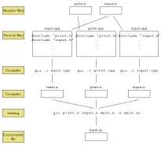

Lecture 3 - Sept 12, 2023
Summary
In this lecture, we review functions, passing-by-value and by-pointers. We introduce passing-by-reference, and introduce multiple files programs.
Last lecture
Introduction to C++
Today
Functions and passing parameters
We passed the variable n by value. This means we only passed a copy of n. If we change n in the factorial function, it will not be changed in main.
This is called pass-by-value.
Therefore, if we swap two variables in the following functions, they will not get swapped in main.
#include <iostream>
using namespace std;
void swap(int x, int y) {
int temp = x;
x = y;
y = temp;
}
int main() {
int x = 7, y = 13;
cout << "Before swap: x = " << x << " y = " << y << endl;
swap(x, y);
cout << "After swap: x = " << x << " y = " << y << endl;
return 0;
}In C, we resolved this issue by passing the address of the two variables to the swap function.
void swap(int* px, int* py) {
// *px: *(&(x)) = x in main
int temp = *px;
*px = *py;
*py = temp;
}
int main() {
int x = 7, y = 13;
// &x: address of x
// &y: address of y
swap(&x, &y);
return 0;
}In C++, there is pass-by-reference syntax that allows a function to access the original variable with no usage of pointers.
#include <iostream>
using namespace std;
void swap(int& x, int& y) {
// no change
int temp = x;
x = y;
y = temp;
}
int main() {
int x = 7, y = 13;
cout << "Before swap: x = " << x << " y = " << y << endl;
swap(x, y);
cout << "After swap: x = " << x << " y = " << y << endl;
return 0;
}Program organization
Large programs are typically organized into multiple files. This helps when we divide tasks in a team.
This also can speed up compilation, and we will explain how.
Single file program
#include <iostream>
using namespace std;
void printNum(int x);
int userInputNum();
int main() {
int num;
num = userInputNum();
printNum(num);
return 0;
}
void printNum(int x) {
cout << "The number is " << x << endl;
}
int userInputNum() {
int x;
cout << "Enter integer: ";
cin >> x;
return x;
}To compile, run the following command in the terminal
g++ lecture3-example3.cpp -o lecture3-example3.soUse “.exe” instead of “.so” on Windows.
This command generates the executable file, which contains zeroes and ones.
Multiple files program
We can divide the program into multiple files.
The function declarations are in the header files (i.e. .h files).
The function implementations are in the source files (i.e. .cpp files).
main.cpp
// <>: searches in standard library locations
#include <iostream>
using namespace std;
// "": searches in current directory
#include "print.h"
#include "input.h"
int main() {
int num;
num = userInputNum();
printNum(num);
return 0;
}print.h
void printNum(int x);input.h
int userInputNum();print.cpp
#include "print.h"
void printNum(int x) {
cout << "The number is " << x << endl;
}input.cpp
#include "input.h"
int userInputNum() {
int x;
cout << "Enter integer: ";
cin >> x;
return x;
}To compile this program with multiple files, there are different ways.
g++ main.cpp print.cpp input.cpp -o lecture3-example4.soWhat happens under the hood?

Notes
#includebelongs to a class of instructions called pre-processor directives.- Preprocessing happens before the compilation.
- Preprocessing textually replaces the
#includewith the content of the filename. - You can include .cpp files instead of .h files. It is bad practice! Why?
- Linking appends function implementations to produce the executable file.
- Linking takes much less time than compiling.
What if I update…
main.cpp
print.o and input.o will not change. Only main.o will change.
g++ main.cpp
g++ main.o print.o input.o -o main.soprint.cpp
main.o and input.o will not change. Only print.o will change.
g++ print.cpp
g++ main.o print.o input.o -o main.soprint.h
This changes #include "print.h" in main.cpp and print.cpp.
g++ main.cpp
g++ print.cpp
g++ main.o print.o input.o -o main.soWhat happens if I include the same .h file multiple times? Why would someone do that? Next lecture.